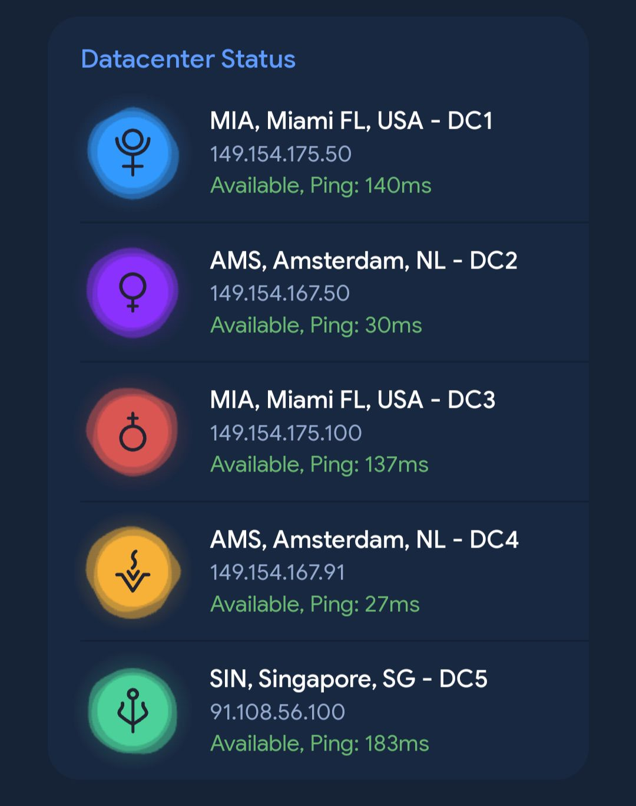

ടെലഗ്രാമിൽ വ്യത്യസ്ത ഫയലുകൾ ഡൌൺലോഡ് ചെയ്യുമ്പോൾ വ്യത്യസ്ത ഡൌൺലോഡ് സ്പീഡ് അനുഭവപ്പെടാറുണ്ട്. എന്തുകൊണ്ടാണിത് എന്നറിയാമോ?

ടെലഗ്രാമിൽ ഫയലുകൾ സ്റ്റോർ ചെയ്തിരിക്കുന്നത് DC1, DC2, DC3, DC4, DC5 എന്നിങ്ങനെ 5 ഡാറ്റാ സെന്ററുകളിലായാണ്.
ഇവ 5 ഉം 5 ലൊക്കേഷനുകളിലാണ്.
DC 1 & 3 U.S ഉം 2 & 4 യൂറോപ്പും 5 സിംഗപ്പൂരും ആണ്.
നമ്മുടെ അക്കൗണ്ട് (Indian number) മിക്കവാറും DC5 ആയിരിക്കും. So, DC5 ൽ തന്നെ അപ്ലോഡ് ആയിട്ടുള്ള ഫയലുകൾ ഡൌൺലോഡ് ചെയ്യുമ്പോൾ നമുക്ക് സ്പീഡ് കൂടുതൽ ആയിരിക്കും.
ചാനലുകൾ സിനിമ ഫയലുകൾ ഒക്കെ ബോട്ട് ഉപയോഗിച്ചാണ് അപ്ലോഡ് ചെയ്യുന്നത്. ബോട്ടുകൾ host ചെയ്തിരിക്കുന്ന സെർവർ അനുസരിച്ച് അവയുടെ DC വ്യത്യാസം ഉണ്ടാവും. അതുകൊണ്ടുതന്നെ ഡൌൺലോഡ് സ്പീഡും.
ഇതിനാലാണ് പല ഫയലുകളും പല സ്പീഡിൽ ഡൌൺലോഡ് ആവുന്നതായി അനുഭവപ്പെടുന്നത്.
Read more:
• ടെലഗ്രാമിനെപ്പറ്റി കൂടുതൽ വായിക്കാം...